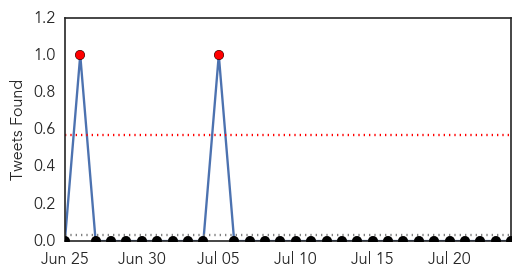
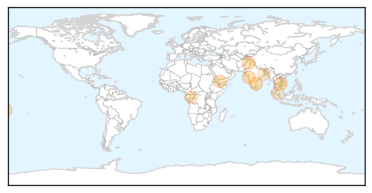
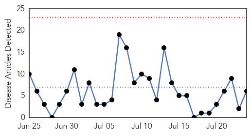
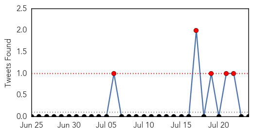

Dengue Fever
30-Day Web Trend
0 alerts, 0 warnings

30-Day Twitter Trend
2 alerts, 0 warnings

Article Locations
Article Confidences

Top Articles:
- 0.997
- South Asia’s Dengue & Chikugunya Burden Much Higher Than Expected
- 0.995
- Patient tests negative for dengue fever
- 0.986
- Citizens advised for protective measures against dengue virus
- 0.985
- Kaohsiung warns residents to guard against dengue
- 0.976
- Dengue cases on the rise in South Mumbai
- 0.958
- Clean up set to mitigate dengue outbreak
- 0.944
- Special banners to help ensure quick action in affected areas, says MBPJ - Community
- 0.921
- High Alert in Bhadradri as 3 Test Positive for Malaria
- 0.908
- In Yemen’s grinding war, if the bombs don’t get you, the water shortages will
- 0.772
- Much-Needed: Infectious diseases dept set up at HFH
- 0.649
- KMC gears up against vector-borne diseases
- 0.558
- Dengue claims 17 lives in Perak since January
Top Tweets:
-
No tweets found for Jul 24, 2015
Cholera
30-Day Web Trend
0 alerts, 0 warnings

30-Day Twitter Trend
5 alerts, 0 warnings

Article Locations

Article Confidences

Top Articles:
- 0.989
- Curbing cholera catastrophe ravaging states
- 0.973
- 5 pandemics that plagued mankind
- 0.655
- ACCESS TO TOILETS IN AFRICA, Articles
- 0.623
- Read this and ask how is it Tony Blair and George Bush are not behind bars
- 0.601
- Ludhiana has several places with same names
- 0.588
- Sudan: Sinnar State takes precautionary measures to prevent spread of cholera from the State of South Sudan
Top Tweets:
-
No tweets found for Jul 24, 2015